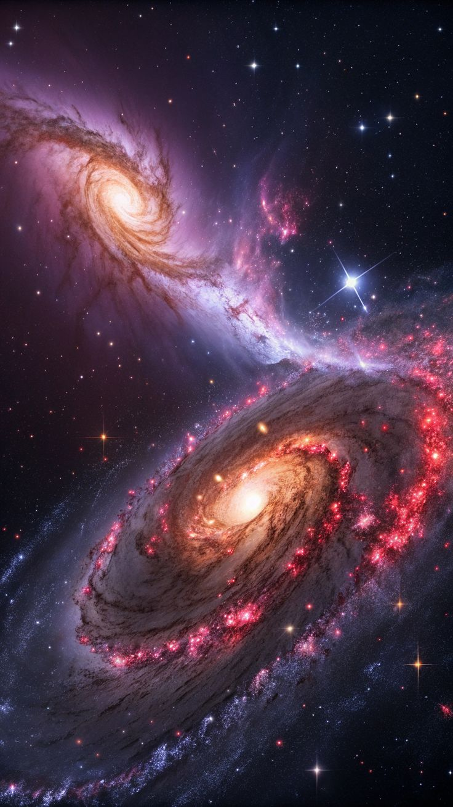

Las galaxias son enormes conjuntos de estrellas, gas, polvo y materia oscura.
En ocasiones, dos galaxias se acercan y comienzan a interactuar debido a la gravedad.
Este proceso puede durar millones o incluso miles de millones de años.
Durante el encuentro, sus formas pueden cambiar y pueden nacer nuevas estrellas.
Un ejemplo futuro sera el encuentro entre la Via Lactea y la galaxia Andromeda.
